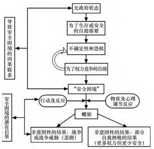

收录于合集

战略互疑、安全困境与中美关系解析
学人简介:
李燕燕，中国人民大学国际关系学院 2014 级博士研究生，烟台大学人文学院讲师，主要研究方向:中美关系、中国外交。
本文在构思和写作过程中得到中国人民大学国际关系学院金灿荣教授、中国社会科学院博士后孙西辉副教授、安徽大学戴维来博士、中国现代国际关系研究院董春岭助理研究员和伦敦国王学院 Lukas Filer 博士的建议和帮助。
本文来源： 《太平洋学报》2017年第3期
本文获取： 后台（聊天页面）回复“ 太平洋学报 ”自动获取
摘要
战略互疑已经成为影响中美关系的核心问题，对其成因的既有阐释更多地强调引起互疑的制度差异、 文化观念及力量对比、 错误知觉等因素。本文在梳理并准确定义“安全困境” 的基础上探讨了战略互疑形成的原因。文章认为， 战略互疑根源于安全困境的结构性因素并因安全困境的激发性因素而升级。严重的战略互疑可能会造成误判， 引发螺旋情景甚至导致双方的战略对立或持久对立。国家间的安全困境不能从结构上消除， 但是双方的相互战略保证和决心可以缓解引发安全困境的结构性因素。克制、 沟通与合作有利于消解安全困境的激发性因素从而减轻双方的战略互疑程度。
关键词 ： 中美关系; 安全困境; 战略互疑
近年来， 中美双方在多个场合表达了加强信任之必要性。中国国家主席习近平更是多次强调中美战略互信对双边关系的重要意义。这也从另一个角度反映出， 当前的战略不信任， 或称战略互疑已经成为影响中美两国关系的核心问题。 事实上， 一些学者也已经注意到， 不断缺失的“战略互信” 已引发两国对彼此的政策做出日渐强硬的渐进性调整。
对于引发两国战略互疑的原因， 不同学者有不同的解释。一种普遍的看法是双方在国家性质上存在差异。例如王缉思等学者认为两国政治制度和意识形态的不兼容是信任缺失的根源。第二种看法认为互疑源于双方的错误知觉、 误 解 及 沟 通 不 足。 例 如 大 卫 ? 兰 普 顿( David M． Lampton) 认为战略互疑是由双方对彼此实力的错误认知引起的: 一方面， 美国过分夸大了中国的实力增长而对自身的弱点表现出过分的担忧，另一方面， 中国夸大了美国的衰落且过于自信。 韩磊( Paul Haenle) 认为互不信任源 于 双 方 缺 乏 公 开 直 接 的 交 流。伊 丽 莎白?伊肯诺( Elizabeth Economy) 则认为中国刻意隐藏自身军事实力造成了两国间的信任赤字。 第三种看法认为， 中国崛起导致的双方利益冲突加剧了彼此互疑。杨洁勉认为， 两国之间的敏感问题受到新旧变量的合成催化产生的集中和放大效应加剧了两国间的战略互疑。这些观点从不同的角度对两国间的战略互疑做出了回应，但是，这些观点的问题在于， 第一， 以上学者主要是从现象及政策入手对中美战略互疑进行解析，而对其根源的理论分析相对较少。第二，中美两国制度、 文化、 意识形态以及特定议题和利益的差异是两国交往过程中一直存在的，并不能解释中美两国在短期内集中出现的互不信任问题。因此， 本文引用国际关系理论中的安全困境理论， 通过对这一理论进行梳理和准确定义， 以期探讨引发中美两国战略互疑的内在原因和缓释方法。
一、 安全困境: 理论回顾及梳理
在现代国际关系理论中，“安全困境” 已经成为论述主权国家间紧张、 冲突乃至对抗生成机理中最为重要的一个概念。安全困境思想的渊源可以追溯到公元前 5 世纪的古希腊时期。最早提出“安全困境” 这一概念并对其进行阐述的是美国政治学者约翰?赫兹( John H． Herz)和英国历史学家赫伯特?巴特菲尔德( HerbertButterfield) 。赫 兹 认 为， 所 谓 安 全 困 境， 是 指“在无政府状态的国际环境下， 民族国家( 或地区) 间互不信任，相互恐惧， 安全成为首要目标。在这种情况下，各国竭力增加军费， 获取军事优势，以改善自身安全状况。但是， 在无休止的军备竞赛中， 一国的军事优势很快会被其他国家同样的扩军努力所打破， 国家无法获得绝对的安全，从而使各国陷入一种无从解脱的困境” 。巴特菲尔德与赫兹最大的区别是， 巴特菲尔德认为，安全困境根源于人性， 而赫兹则认为， 安全困境是霍布斯的“自然状态” 所造就的。
安全困 境 理 论 提 出 后， 罗 伯 特 ? 杰 维 斯 ( Ｒobert Jevis) 、 杰克?施奈德( Jack Snyder) 、 阿兰?柯林斯( Alan Collins) 等学者对这一理论进行了更深一步的研究。随着研究的不断发展，安全困境很快成为各学派的理论基础或关注重点。但是，由此引发的问题就是， 概念的普遍流行带来了概念混乱的结果，安全困境成为一个在理论上适应一切国家和状况、 在实际应用中被泛化的缺乏学术价值的术语。
唐世平教授在批判地检视安全困境这一概念的基础上， 对其定义进行了更严格的界定。他认为，安全困境包括三个必不可少的条件: 一是无政府状态( 这导致了不确定性、 恐惧和为了生存和安全的自助需要) ; 二是双方均无恶性意图; 三是权力的积聚( 包括进攻性的能力) 。从无政府状态到安全困境再到战争的因果联系应该是: 无政府状态产生对彼此意图和动机的不确定性— ——不确定性引发恐惧— ——恐惧产生权力竞争— ——权力竞争引发潜在的安全困境— ——安全困境被激活产生螺旋， 螺旋引发战争。具体关系见图 1。

图 1 从无政府状态到安全困境、 再到战争的因果联系
厘清安全困境的内涵及产生原因，有助于我们更好地从源头上理解国家间的信任及不信任问题。第一， 安全困境是国家间战略互疑的根源，它源于无政府状态、 对他国意图的不确定性以及国家间的权力集聚; 第二， 安全困境不同于螺旋( spiral) ，安全困境通过物质因素和心理因素以及双方的互动，可能会导致诸如关系的恶化和军备竞赛等形式的螺旋式情景，这又会反过来加剧战略互疑甚至引发冲突。第三，缓解安全困境及可能的螺旋， 可以通过战略再保证( to reassurance) 的方式， 以有代价的信号向对方表达善意及合作的愿望，从而消除互疑并建立信任。接下来，本文将以此为研究框架， 在借鉴唐世平教授关于安全困境理论的分层基础上，将安全困境做双层解构，分别探析安全困境的结构性因素和激发性因素，尤其关注这些激发因素对安全困境的反馈作用，以此来探讨近年来中美两国战略互疑的升级，以及双方行为、 物质和心理变化对安全困境的强化作用并寻找缓解安全困境的出路。
二、 中美安全困境的表现及特征分析
2．1 近年来安全困境在双边关系中的表现
对于中美之间是否存在安全困境， 江忆恩( Alastair Ian Johnston) 提出三项评判的标准: 第一，双方是否在忽视对方合作性行为的同时放大对方的非合作性行为; 第二， 双方是否越来越忽视两国关系的互动性， 也就是说， 双方都认为对方应当为双方关系的恶化负全部责任， 而双边关系的维护则得益于双方的努力。第三， 一方是否越来越担忧对方将变成改变现状国家，或者是越来越多地怀疑现行策略的效力。
如果我们将这三项标准代入到关于近些年中美关系的分析和评判中， 就不难发现， 首先，在对对方行为的评价上， 双方都认为对方的意图是非善意或不确定的， 且有意破坏己方的合作倡议或行为。在美国政治分析人士和媒体话语中，中国未来的发展具有很大的不确定性， 中国对东亚包括东南亚地区的经济繁荣和社会稳定所起的巨大作用很少被提及。同样， 在中国，政府与公众普遍认为中国是维护亚洲和平的重要力量，很少有人注意到， 奥巴马在第一任期内为了防止日本右翼政客利用美日同盟来激怒挑衅中国，对美日关系非常谨慎， 而类似行为对于保持亚洲地区稳定相当重要。
其次，在对双方关系的评价上， 双方都认为己方为维护双边关系采取了克制行为，发挥了积极作用，而对方的言论与行为对问题的解决起了负面或破坏性作用，并引发了区域及双边关系的不稳定。近来中美在南海、 东海、 台湾地区、 朝鲜半岛问题上的互动倾向负面，双方都认为己方保持了善意的意图，并对维护和稳定区域安全及双边关系发挥了积极作用。美国强调其对中国的态度是积极的， 美国反复表示“欢迎一个和平繁荣的中国崛起” ，但又指责中国不断增加的经济和军事力量破坏了双边平衡， 两国在知识产权、贸易政策、 投资等领域的竞争增加了美国领导人的担忧。 而在中国看来， 尽管中国在外交行为上尽力尊重美国的利益， 但美国加强与中国周边国家的安全和经济关系、 推出以排挤中国为目标 的 跨 太 平 洋 伙 伴 关 系 协 定 ( Trans-PacificPartnership Agreement，简称 TPP) ，尤其美国将政治问题法律化， 挑唆菲律宾发起南海仲裁， 借对中国不利的法律结论， 进行舆论炒作， 又在韩国部署“萨德” 系统，其根本目的都是“借力打力” ，离间中国与周边国家的关系，遏制中国崛起。
第三，在对己方行为的评估上， 两国都强调双方的差异性，都认为自己的利益和政策几乎是一贯的，而国内都有声音激辩是否应该调整现行政策以回应对方。根据美国皮尤公司的调查，2016 年，超过半数的中国民众认为美国是在遏制中国的崛起，在实施何种对美政策问题上， 国内的讨论也很激烈。美国方面， 大量学术著作论述美国的对华政策是否已经失败，美国外交关系委员会发布的《修正美国对华大战略》 报告声称，中国并没有成为美国所期望的“负责任的利益攸关方” ， 未来几十年， 中国将成为美国主要的竞争者。报告呼吁，“美国应该采取一项新的对华大战略， 这一战略的核心不是扶植中国的日益崛起， 而是平衡中国不断上升的实力” 。报告建议美国对华政策应从“两面下注” ( hedging) 转向“积极反制” ( active countering) 。
中美间存在着不断深化的安全困境， 双方互不信任，“战略互疑” 成为中美关系的核心关切。2012 年，北京大学国际战略研究院院长王缉思与美国布鲁金斯学会约翰?桑顿中国研究中心主任李侃如 ( Ken Lieberthal) 合著的报告《中美战略互疑: 解析与应对》 明确指出， 尽管北京和华盛顿均寻求建立一种长远的建设性伙伴关系，但是， 以往的交流经验和广泛的交流活动，并未能使任何一方建立对对方长远目标的信任，相反，缺乏互信的问题正日趋严重，与此相应的是，中美关系的稳定性在下降， 安全困境愈加公开化和复杂化。
2．2 中美安全困境呈现出的特征
总体上说， 当前中美之间的安全困境呈现出螺旋性、 溢出性和复杂化的特征。首先， 安全困境呈现向螺旋性转化的特征。正如我们在上文关于安全困境的界定中所说， 安全困境会产生螺旋式情境，一些调节性因素( 例如领导者的知觉) 会加重螺旋式情境。当中国快速增长的经济实力和落后的军事实力产生巨大反差时，增加军队预算、 开展军事现代化建设对中国来说是必然的。但是，“一个国家认为保证自我安全的措施， 对于对手来说则是围剿行动。大国尤其如此。在全世界到处都有利益的国家不可能不具备强大实力， 这样的实力自然对别国形成了威胁” 。南海问题尤其如此。中国强调，长期以来，中国聚焦国内经济改革和发展， 在南海问题上奉行“韬光养晦” 和“搁置争议、 共同开发” ，对维护南海和平稳定做出了巨大努力， 但国家领土主权和海洋权益却遭受周边国家的蚕食。近年来， 中国外交上强调“有所作为” ， 以“亲、 诚、 惠、容” 为准则继续发展与周边国家关系的同时， 在南海地区坚决维护国家主权。但2010 年美国高调宣布“重返亚太” ， 公开指责中国，并以维护地区稳定和航行自由为由， 干涉南海主权问题， 将南海问题国际化。针对中国的南海维权行为，美国拉拢菲律宾、 日本等国在南海开展巡航、 部署高端武器， 其军事行动已经由“骚扰” 升级为“战略威慑” ，美方在南海问题上的行为使美中双边关系出现了从安全困境向螺旋模式转移的危险， 而安全困境与螺旋模式的区别就在于双方行动的意图不同， 前者的意图是防御性的，而后者则既有可能是防御性的，也有可能是进攻性的。
其次，安全困境呈现出溢出性特征。安全困境说到底是由一国对另一国的不信任引起的。当一国在某个领域倾向于采取不信任的态度时，这种不信任就会影响到国家对对方国家其他领域的不信任， 进而认为其本质上不值得信任。在中美关系中， 双方对对方意图的怀疑已经从最初的安全领域向经贸、 人权、 网络安全等领域蔓延。以网络安全为例， 美国不断批评中国的网络审查、 黑客攻击等问题， 而中国则抱怨美国在投资方面设置双重标准， 利用所谓网络自由等问题抨击中国政府， 双方围绕网络攻击、 情报窃取、 网络自由等问题摩擦不断， 网络安全议题在中美关系整体格局中的重要性日益上升，这导致“双边关系中， 没有哪个议题像网络安全议题一样快速升温， 且在很短时间内造成大幅摩擦， 两国在网络安全领域内的互疑不断加深，这为双方在评估彼此战略意图时产生了严重的负面影响” 。中美在网络安全问题上的不信任，逐渐扩展到与网络相关的经贸投资、科技创新等领域， 这些问题相互作用， 相互影响，安全困境由此向横向领域扩散。
再次，安全困境出现复杂性特征， 随着安全困境的升级，双方的态度更加强硬， 互相妥协的空间更小，维持秩序的成本不断增加， 这导致每一方提出的缓解安全困境、 增强合作的倡议都没有得到对方的积极回应， 甚至会加深彼此的战略互疑。例如，2008 年，美国著名经济学家弗雷德?伯格斯滕( C． Fred Bergsten) 主张， 美国应寻求同中国发展一种真正的伙伴关系， 以实现对全球经济体系的“共同领导” ， 这就是所谓的“G2” 模式， 但是这一提法遭到中国政府的明确反对，因为在中国看来，所谓“中美国” 不过是美国“捧杀” 中国的阴谋。2009 年， 美国副国务卿詹姆斯?斯坦伯格( James Steinberg) 提出“战略再保证” ( Strategic Ｒeassurance) 概念， 提议美国应明确保证中国发展成为一个繁荣和成功的国家，而中国应向世界保证， 中国的发展并在发挥日益重要的全球角色时不会威胁到其他国家的安全。但不久这一概念就遭到抛弃， 因为一些人怀疑这可能意味着华盛顿将对中国实行单纯的接触政策。而针对中国提出的建立“新型大国关系” 的提议， 美国在给予短暂积极回应后，又开始消极对待。华盛顿对新型大国关系这一提议的暧昧态度， 从北京的角度来看，恰好印证了美国并不想要接受中国成为国际社会中强大一方的观点， 安全困境出现针锋相对、互不相让的态势。
三、 战略互疑的产生、 升级与中美安全困境的双层解构
3. 1 战略互疑产生与安全困境的结构性因素
正如上文就安全困境所作的定义所述， 产生安全困境的必不可少的原因在于结构、 意图和权势的增加这三个主要方面。首先， 就国际政治结构而言， 由于国际社会处于无政府状态中，缺乏一个超越国家主权之上的最高权威， 每个国家都必须遵循“理性自私” 的原则， 尽其所能地实现自我保存。其结果往往是“ ( 决策者)不会设身处地的为他们的邻国着想， 他们没有意识到他们自己的行为可能看上去很有威胁性。即使他们知道了这一问题也不重要。他们所处环境的特性迫使他们采取他们要做的措施” 。中美两国虽然并非邻国， 但从国家规模、经济力量、 军事实力、 意识形态等方面来看， 两个国家可以说是一对“天然的竞争对手” ， 由此产生了相对稳定的结构性矛盾， 例如崛起大国与守成霸权之间的矛盾、 地缘政治矛盾、 政治制度与意识形态的矛盾、 台湾问题等。这些矛盾相互关联，相互影响， 在此基础上产生的对抗和竞争会带来国际体系的紧张， 并以不同的方式考验着每一个体系内的领导者， 而这正是两国安全困境的根源所在。
就双方意图而言， 行为体的意图是其对实现目标的行为的偏好，意图的不确定性是国家间安全竞争的心理动力， 影响到国家间的战略互信，催生国家间的战略互疑， 强化国家间的安全竞 争， 并 妨 碍 国 家 间 安 全 合 作 的 性 质 和 程度。在现实主义者看来，他国意图的不确定性对国际政治的影响是根本性的。这是因为， 第一，国家无法确定他国的真实意图， 第二， 即便他国可能并非拥有敌对的意图， 但国家也不可能相信别国都具有绝对的善意。第三， 意图是会变化的，即便一国现在没有恶的意图， 并不保证将来的意图不是恶的。因此， 国家在制定国家安全战略时， 由于对国家实力的认知是清晰可见的， 而对一国意图的认知则要困难得多。意图的不确定性往往会促使他们做出“最坏的打算” 。
就中美关系而言， 不同于历史上其他的帝国，美国对外行为不以谋取领土扩张为目的，而是以维护美国主导的自由主义国际秩序为己任。而对一个有着复杂地缘环境的中国来说，自邓小平时代以来， 中国领导人就认识到，和平与发展是世界的主题， 进攻性现实主义政策对中国来说是不适宜的， 因为这样会招致中国的邻国与其他大国形成一个围堵中国的联盟。基于这一基本认识， 中国采取的是一种可以被称作防御性现实主义的安全战略， 这一战略强调温和、 自我约束以及安全合作，其具体内容包括反对外国干涉， 维护领土完整， 减少邻国猜疑， 维护经济增长。 因此， 中美两国都没有意愿和能力来颠覆对方，但是在确保己方善意的前提下， 两国都不能确保对方的意图， 因此，在很长时间内， 美国对中国采取双面下注的政策，以接触为主， 遏制为辅， 而中国对内以经济建设为中心、 对外“韬光养晦” ， 大力加强自身能力建设，可以说双方采取的行动都具有“防御性” ，但是对对方的意图保持警惕， 互不信任成为常态。
就双方实力而言， 现实主义者认为， 在竞争性环境下， 实力是利己的行为体之间利益冲突的决定手段， 双方都会采取自认为是防御性的手段来维护自身安全。自建交以来， 中美两国在长期的互动中建立了共识， 那就是尽管双方有阶段性的不稳定、 问题甚至危机， 但是双方需要为共同的利益进行合作， 因为冲突的代价将远高于合作所带来的收益。基于此， 双方在共同利益的基础上达成的以“融入—接纳” 为特征的战略基础和相互定位，确保对方都能集中精力不受对方干扰地发展自身实力， 两国保持着一种“竞争性合作” 关系，正是这一定位， 使中美两国保持了 40 多年的总体和平。不过， 中美两国作为一对现实主义国家， 时刻警惕对方的实力变化，在研判对方的时候， 尤其注重双方的相对收益，因此，中美之间经常围绕经贸、 投资、 非传统安全问题讨价还价，并时常出现摩擦。从以上分析可以看出， 作为两个大国， 中美之间天然存在安全困境， 这是国际政治的结构性因素， 是国家间互不信任的根源。但是，由于中 美 建 交 以 来， 双 方 都 表 现 出 合 作 的 态度， 就双方的安全问题达成战略共识， 又由于双方的 实 力 差 异 巨 大， 所 以 安 全 困 境 的 程 度较低。
3．2 战略互疑升级与安全困境的激发性因素
依据上文提到的安全困境理论， 安全困境的最初导因在于结构性因素， 但是如果国家的物质和心理要素发生变化、 双方相互采取了容易引起对方疑虑的行动， 就会产生反馈效应， 从而造成安全困境升级， 战略互信下降， 甚至引发螺旋困境，最终改变安全困境的性质。
（1）物质要素对安全困境的影响
深化或激发安全困境的物质要素是多方面的，其中除了地理、 极数、 军事技术、 武器的性质( 进攻性武器还是防御性武器) 等因素， 还包括非对称权力和外部行为体的影响这两个重要因素。
第一，安全困境理论表明， 国际政治中， 以实力为特征的权力分布一直是决定国家行为的重要考量。而非对称的权力分布对理解国家间的安全困境至为关键。在非对称性权力关系中，新型大国对权力的集聚常常更为敏感， 更容易反应过度( over－react) ， 同时霸权国家则会因新兴国家的崛起而增大对衰落的恐惧并夸大威胁的感觉。就美国而言，由于长期奉行里根式自由主义政策， 市场原教旨主义成为美国经济和金融危机的罪魁祸首， 同时，“9?11” 后， 美国以反恐为名先后发动伊拉克战争和阿富汗战争，不仅造成大量美军伤亡， 而且使国内债台高筑，恶化了经济形势。尤其是自 2008 年经济危机以来， 美国出现实力相对衰落的局面。2009年 1 月，美国国家情报委员会发布“2025 年全球趋势” 报告，报告认为，“虽然美国很可能保持它唯一最重要行为体的地位， 但它的相对力量将减弱，美国的操控力越来越受限制” 。 就中国而言，中国的崛起从根本上改变了 21 世纪的中美关系。 改革开放 30 多年来， 中国经济实力大幅增加，随之而来的是中国的军事力量、 对亚洲经济的主导能力以及全球影响力的逐渐上升，中美两国在安全领域的竞争性加强。除了老生常谈的“3T” 问 题 即 台 湾 ( Taiwan) 、 西 藏( Tibet) 、 贸易( Trade) 问题， 中美双方围绕亚太地区领导权、 军事现代化、 海洋问题、 中国产业升级、 新空间领域竞争、 国民心态、 国内社会矛盾、 发展模式等问题的竞争和摩擦越来越多， 甚至可以说， 这些问题之复杂在中美各自的交往史上都是前所未有的。
两国权力变化所产生的直接结果是， 中美两国的利益界定和竞争也发生了变化。根据2015 年《美国国家安全战略》 的界定， 美国的核心利益包括: 国家安全、 经济繁荣、 价值观的优越性以及美国主导的全球秩序， 2016 年南海仲裁案结果公布后， 美国白宫国安会亚洲事务主任康达( Daniel Kritenbrink) 首次提出南海是美国的“最高国家利益” ( top national interests) 。而 2011 年中国国务院发布的《中国的和平发展》 以官方形式明确了国家核心利益， 即国家主权、 国家安全、 领土完整、 国家统一、 中国宪法确立的国家政治制度和社会大局稳定、 经济社会可持续发展的基本保障。其中， 中国首次将南海和东海的领土主权纳入核心利益的概念， 维护核心利益的态度也更为坚决。这无疑与美国界定的核心利益出现重合与冲突， 引发美国对中国威胁到美国维持东亚秩序的疑惧。双方不仅在利益界定上发生冲突， 在利益竞争方面的冲突也更广更深， 尤其在经济领域， 随着中美两国从贸易互补型向贸易竞争型转变， 人民币国际化逐步推进，中美两国的竞争将更为深入。
第二，在安全困境理论中， 外部行为体的影响对国家间信任关系的影响经常被忽视， 实际上，盟友与联盟关系会对安全困境产生重要作用。波森( Barry Posen) 认为， 盟友或潜在盟友的支持会大大恶化安全困境甚至引发螺旋。 第三方因素在中美两国关系中具有重要影响。在亚洲地区， 部分国家对中国产生矛盾心态， 一方面，希望从中国发展中收益; 另一方面，又担心中国主导亚洲秩序，加上中国与这些国家在历史文化、 领土领海、 意识形态等方面的矛盾，因此他们对中国的崛起心存疑虑，这也为其与美国加强军事政治联系提供了借口。例如， 在钓鱼岛、 黄岩岛等问题上，中美关系经常因美国履行所谓对盟国的义务而紧张，菲律宾在美国支持下发起的南海岛礁诉讼，韩国与美国决定共同在朝鲜半岛部署“萨德” 导弹防御系统，更是直接损害了中国的战略利益，破坏了双方在经贸关系发展基础上建立起来的战略互信，并继而恶化了双边关系。
总而言之， 物质要素虽然不是安全困境产生的根源，但是，他们对安全困境起到了激发作用，从而使安全困境升级并愈发复杂， 这也使双方对彼此的实力认知更加敏感， 对对方未来的意图更加警惕，互不信任的程度更加严重。
（2） 心理要素对安全困境的影响
在现实主义理论中， 不信任问题以及由此引发的恐惧心理长久以来就被认为是无政府状态和安全困境的一个关键连接， 也是安全困境的关键性推动因素。中美双方实力的巨大变化对中美两国国民心态产生的影响是不言而喻的。两国对彼此长远意图的疑虑也成为双边关系中的核心问题。从中国的角度来看， 一方面，经济上的巨大成功激发了民众的自信心， 中国希望强大的综合实力能为中国在国际体系中争得更高的国际地位和影响力， 在国际货币基金组织等全球治理机构中能获得更多的话语权，同时，在中国的岛礁、 海洋等主权权益问题上愈发有力地维护自己的正当诉求。另一方面，中国百年来受西方国家侵略与压迫的沉痛历史对外交政策形成的压力也不容忽视， 民众越来越不满于其他国家对中国的批评、 指责与约束。从官方的角度看， 中国一直高度警惕以美国为首的西方国家的意识形态渗透， 严防“和平演变” 的认知从未改变。而很多中国人怀疑，美国企图通过分裂中国、 破坏中国政治制度以及联合中国的敌对势力实施包围等手段， 达到遏制中国的目的。无论是先前发生在独联体国家的“颜色革命” ， 还是后来的“阿拉伯之春” ，在中国看来， 背后都有美国为首的西方国家的影子，美国以人权为名为港独、 台独等势力背书也被中国视为故意破坏中国国内秩序的举措。 而美国方面，其国内政治、 经济、 社会形势的压力和中国的崛起使美国的焦虑感上升， 美国对中国的战略评估已经从原来的意识形态、政治体制和双边关系中的结构性难题， 转向了对中国能力和意图的评估， 但是由于意图难以捉摸，美国便以中国的军力建设来进行评估。它认为中国巨额的军费增长表明中国的侵略性意图，以此断定中国是一个修正主义国家， 并由此认为随着中国在全球与地区经济和安全事务中的影响力日渐增长， 从现有国际体系中获得的相 对 收 益 更 大， 中 国 的 崛 起 将 重 塑 国 际 体系，进而从根本上威胁美国在现行国际体系中的主导地位。
（3）双方行为互动对安全困境的影响
按照安全困境的生成机理， 两个本质上维持现状的国家在互动过程中， 针对对方的行动，刚开始每一方都认为自己的回应只限于维持原先的策略， 倾向于认为对方只是误解了己方的意图。但是，随着双方的互动， 决策者会因为自己的错误知觉高估本国的影响力或受他国影响的程度，一方会越来越倾向于认为对方更像一个修正主义国家， 这就会导致己方重新评估先前策略的正确性， 并倾向于实施更强硬的政策，安全困境变成一种基于恐惧或不安全感的螺旋。回顾 2009 年奥巴马( Barack Obama) 就任美国总统以来的中美关系， 可以很明晰地看出， 中美之 间 的 安 全 困 境 经 历 了 这 样 一 种 社 会 化进程。
2012 年 6 月， 时 任 美 国 国 防 部 长 帕 内 塔( Leon Panetta) 在新加坡出席第 11 届“亚洲安全大会” 即“香格里拉对话会议” 时明确提出“亚太再平衡” 战略，宣布到 2020 年， 将把 60%的美国舰机部署到太平洋一侧。2013 年 9 月至 10月，习近平主席出访中亚和东南亚国家， 先后提出倡议，共建“丝绸之路经济带” 和“21 世纪海上丝绸之路” ， 这使美国认为中国强力推行“西进” 政策对冲美国的“东归” ， 美国开始在西太平洋地区建立前沿军事部署， 采取两面下注的政策与战略， 与中国周边国家加强联盟并深化安全伙伴关系; 采取强硬的经贸政策; 利用美国的国力和外交活动予以制衡。美国还试图调整其中亚、 南亚政策， 通过确立中亚五国+美国机制，即所谓“C5+1” 机制， 深化与中亚关系， 加强美印同盟关系， 达到牵制“一带一路” 建设的目的。这 些 反 应 助 长 了 一 种 势 不 可 挡 的 作用— ——反作用循环， 加剧了中美两国业已存在的安全困境， 并有可能造成双方都不想也不需要的敌对关系，更使双方的合作越来越困难。
四、 缓解战略互疑需从解构安全困境着手
中美正处于一种不断深化的安全困境之中。这的确是很多学者或观察家近来得出的结论。随着两国在经贸、 安全、 地区领导地位以及网络等方面的竞争进一步强化， 在某些领域或地区，双方的战略空间越来越小， 战略相持关系已隐隐成型，甚至有政界和学界人士宣称， 中美关系已进入一种“新冷战” 状态。
对于中美之间的安全困境是否会演变为真正的冲突，需要辩证地看待这一问题。正如我们在分析安全困境的特征时提到的，安全困境并不必然产生冲突，安全困境的调节因素会导致一方或双方善意的缺乏， 进而可能会导致战争或冲突，也可能导致自我挫败的结果( 也就是说，一方加强权力的努力导致更多的不安全感) 。在中美关系中，我们可以看到， 当前中美之间的竞合关系发生了巨大变化，且合作与竞争之间的平衡正在从前者向后者转移，未来中美关系的实质最有可能是合作、 冲突与有限冲突的混合体。因此，如果中美关系处理不好， 安全困境继续升级， 就有可能进入螺旋情境，中美之间就会出现战略对立或持久对立。但是，如果我们从缓解安全困境及其激发要素入手，可以避免国家间安全困境的上升螺旋，将安全困境限制在可控范围之内。为此从上文阐述的两个层次入手，分层实施。
首先，从安全困境产生的根源入手， 双方需要做出相互战略保证， 表明决心。所谓相互战略保证，是指以具体措施减轻彼此对对方战略意图的关切。既然结构性因素是安全困境产生的最初导因，那么， 首要的问题应该是正视双方的安全困境， 而非否认其存在。在引发安全困境的三个因素中， 结构性因素相对固定， 权势积累明晰可见， 因此， 缓解安全困境， 最重要的是明确彼此意图。在此基础上， 双方应该做出相互战略保证并表达决心， 从而表明双方底线，防止误判， 避免冲突升级。这具体包含两个方面，第一，通过尽可能减少与单边安全政策相关的模糊性和不确定性， 来对一方表现出的良好意图进行肯定; 第二， 对任何可能显示非善意意图的行为进行及时提醒与警示， 并允许双方以足够的时间做出调整与回应。近来在南海问题上，应该说中国较为清晰地践行了这一战略。南海仲裁案结果公布后， 一方面， 中国将主权问题与航行自由问题做出明确区分， 向外界声明维护领海主权与拥护航行自由、 维护和平发展的信心; 另一方面， 针对菲律宾发起的南海仲裁，中国坚定表达了“不承认、 不接受、 反对且不接受任何以仲裁裁决为基础的主张和行动” 的决心，亮明立场和底线， 这使得美国不得不明确表态，公开声明美国对南海仲裁案的内容“不持立场” ，并支持菲律宾与中国通过双边对话来协商解决问题。
其次，从安全困境升级的激发因素入手， 通过发出成本信号( costly signals) ， 向对方释放善意和合作信念， 从而减轻互疑， 促进合作。第一，在双方的互动中注意保持克制， 释放包括对话、 协商、 主动给予让步、 调整军事姿态等形式的成本信号， 管控危 机， 化 解 互 疑 螺 旋。2015年，美国海军战争学院教授金莱尔( Lyle Goldstein) 在其新著《相向而行: 如何缓解中美间日渐显现的竞争关系》 中就提出大胆建议: 鉴于政治决策者面临安全困境时会因恐惧和误判而导致危机的升级螺旋，他提议双方建立一种“合作螺旋” ( cooperation spiral) ， 即通过渐进、 妥协和互惠的步骤逐步建立信任和信心， 推动中美关系在一系列棘手问题上取得实质性进展。在这一层面上， 中美战略与经济对话以及高层对话对于双方管控危机、 加强沟通、 增强信任具有重要作用。第二， 坚持合作共赢， 推进功能性合作。所谓功能性合作， 就是中美双方通过一系列具体的事务性合作建立一种“功能性伙伴关系” ，然后在这些大规模、 多层次的接触中共同探索出一条新型大国关系之路。 近年来， 中美之间虽然战略竞争加剧， 但这并不是说双方的合作领域减少了。相反， 两国在双边关系、 全球管理方面拥有更多的共同利益， 两国完全可以通过 权 力 分 享 ( sharing power ) 和 责 任 分 担( sharing responsibility) 实 现 共 同 发 展， 互 利 共赢。第三，缓解安全困境的升级，加强双边沟通，摆正心态非常重要。对美国来说需要正确看待中国的崛起，在其主导的国际体系中为中国释放更大的增长空间。对中国来说，既要认识到实力增强的局限，更要认识到当前美国所主导的国际体系是有益于中国的，中国并非“另立门户” 。总之，从本质上说，中美关系的实践性大于理论性，中美关系很大程度上取决于双方的互动和实践，两国在互动中有能力通过灵活方式实现互利共赢。
五、 结 语
安全困境的产生根源于国际体系的无政府状态，2013 年，斯诺登( Edward Snowden) 爆出美国国 家 安 全 局 窃 听 德 国 总 理 默 克 尔 ( AngelaMerkel) 手机引起轩然大波，这说明即便是政治制度、 意识形态相同或相近的国家， 也并不总是相互信任的。最早提出安全困境理论的巴特菲尔德( Herbert Butterfield) ，曾将安全困境称为“现代冲突中的悲剧因素” ，一些学者甚至将其视作导致战争爆发和维持和平的一般动力。以安全困境理论来看待分析中美关系， 并不表明中美之间的未来必然是悲观的。实际上， 近年来，中美之间围绕西藏、 人权、 台湾以及意识形态方面的传统问题的紧张关系比过去缓和很多，两国还以理性的方式成功处理了一些敏感的突发性事件。从这一点来说， 中美之间并非注定对抗， 而是可以相向而行， 不断超越“修昔底德陷阱” 。要实现这一目标， 双方领导人需要坚定的政治决心和远大的战略视野， 正确认识到“合作是中美双方的唯一正确选择” ， 在此基础上明智管理安全困境， 减轻互疑， 减少利益分歧，增强合作，并最终带领两国人民走向共同繁荣和发展之路。
声 明
国政学人微信公众平台系非盈利学术平台。文章出自最新的南大CSSCI和北大中文核心来源期刊为。目的是方便广大学人进行学术研究，促进学术的传播和交流，不做任何商业用途。如有任何权利问题，请直接与我们联系。